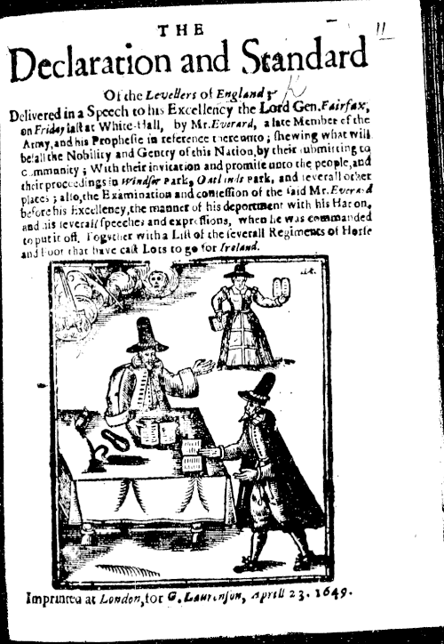
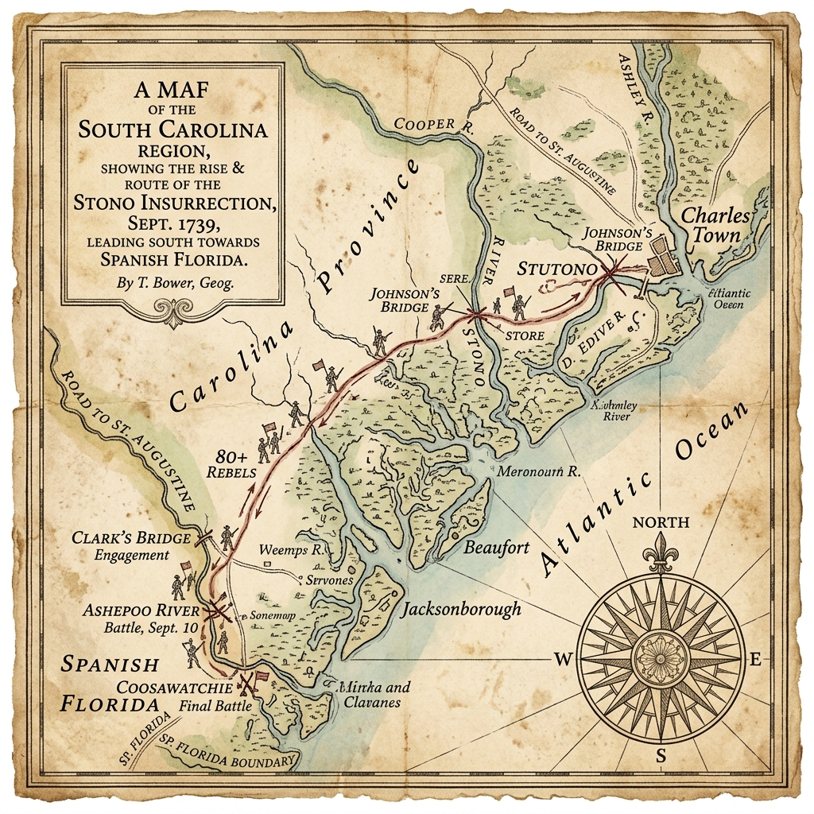
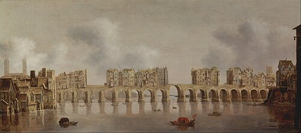
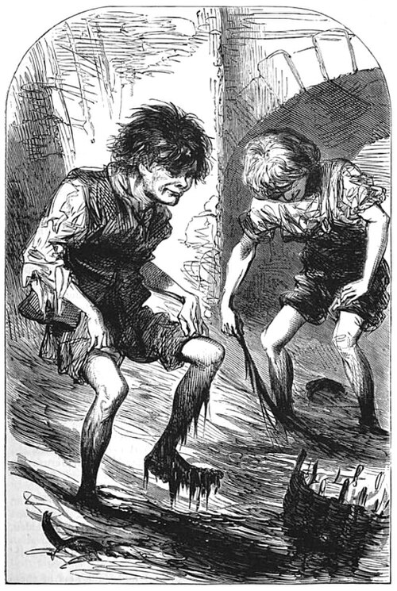

Complete Unit
KS3: Early Modern World & Global Encounters (1450–1750)
Course Textbook
Enquiry: How 'global' was Britain's transformation between 1450 and 1750?
Contents
|
Lesson 1: Who held global power in 1450?
|
Page 3
|
|
Lesson 2: How did religious conflict trigger global exploration (1517–1588)?
|
Page 8
|
|
Lesson 3: Trade or takeover: How did early encounters turn into empire?
|
Page 15
|
|
Lesson 4: James I and the Gunpowder Plot: Why was religious division so volatile?
|
Page 21
|
|
Lesson 5: Who controlled Britain? The Ideological Battle
|
Page 24
|
|
Lesson 6: Who controlled Britain? The Economic Shift
|
Page 31
|
|
Lesson 7: What were the mechanics of the Transatlantic Slave Trade?
|
Page 33
|
|
Lesson 8: How did enslaved Africans resist the Transatlantic Slave Trade?
|
Page 38
|
|
Lesson 9: How 'modern' was Britain by 1750? (Synthesis & Assessment)
|
Page 45
|
L1: Who held global power in 1450?[[SRC_MARKER:L0_Start]]
Learning Objectives
Identify the major global powers and trading hubs in the year 1450.
Explain how the Ottoman Empire and West African kingdoms controlled global wealth.
Evaluate why Western Europe was on the periphery (edges) of world trade in 1450.
Vocabulary Check
The Odd One Out: Select THREE terms that share a close historical
connection. Identify which ONE remaining term is the 'Odd One Out' in this lesson, and
explain your historical reasoning:
Ming Dynasty | Ottoman Empire | Songhai Empire |
Silk Roads | Fall of Constantinople (1453) | Eurocentrism
Teacher Model / Pupil Reasoning:
Source A

Source A: A 15th-century English manuscript illumination showing peasant agricultural laborers
toiling in the fields. The vast majority of Europeans lived in localized poverty, completely
oblivious to global trade.
If a traveler from another planet had visited Earth in the year 1450, Western Europe would not
have looked like the center of the world. In fact, it would have appeared as an impoverished,
cold, and isolated periphery on the outer western edge of Eurasia.
While later
generations assumed Europe was always powerful, the mid-15th century reality was stark:
England and France were exhausted after the hundred-year conflict of the Hundred Years' War,
and populations were still recovering from the devastation of the Black Death. An ordinary
European peasant lived in a dark, smokey, single-room hut made of wattle and daub (woven
sticks covered in mud) with a thatched roof, sharing the dirt floor with pigs and chickens to
stay warm during freezing winters. Their diet was monotonous, consisting almost entirely of
'pottage'—a thick, bland stew of boiled cabbage, peas, and oats.
Ordinary Europeans
rarely traveled more than five miles from their birthplace. European kingdoms had few precious
minerals, limited manufacturing, and produced almost nothing that merchants in Asia or Africa
wished to buy.
[[SRC_MARKER:L0_Task_0_0]]Q1. Study Source A. What does this contemporary illumination suggest about the daily
reality and living standards of ordinary people in Western Europe around 1450?

The Silk Road trade network: overland caravan routes in red connecting Central Asia to
Constantinople, and maritime spice routes in blue. The Ottoman capture of Constantinople cut
Europe off from overland transit.
Although ordinary Europeans lived in poverty, wealthy monarchs, nobles, and churchmen were
desperate for luxury goods from the East: fine silk and porcelain from China, and exotic
spices like pepper, cloves, and cinnamon from India and the Moluccas. For centuries, these
goods traveled overland along the ancient
Silk Roads.
However,
directly between Western Europe and Asia stood the rising superpower of the Islamic world: the
Ottoman Empire. On 29 May 1453, 21-year-old Sultan Mehmed II shattered the
ancient stone walls of Constantinople using massive bronze cannons. Mehmed transformed the
city into
Istanbul, the jewel of the Muslim world, and seized control of the
ultimate crossroads connecting European trade to the East.
🌍 Western Europe
(Desperate for Spices)
🐪 The Silk Road
(Vast Global Wealth)
For European merchants in Venice, Genoa, and London, this was a disaster. The Ottomans slapped
heavy taxes on European traders and restricted access to Asian routes. Western Europe was
effectively locked out.
Source B: Eyewitness Diary of Nicolò Barbaro (May 1453)
"On the twenty-ninth of May, 1453, the last day of the siege, our Lord God decided to
deliver the city into the hands of the Turks... The blood flowed in the city like
rainwater in the gutters after a sudden storm. The corpses were thrown into the sea like
melons floating along a canal... The Turks entered with such fury that all Christians who
resisted were put to the sword."
— Adapted from the diary of Nicolò Barbaro, a Venetian merchant
trapped inside Constantinople.
[[SRC_MARKER:L0_Task_2_0]]Q2. Study Source B. Why might a Venetian merchant like Nicolò Barbaro have had a biased
and particularly panicked view of the Ottoman capture of Constantinople?
Source C

Source C: A detail from the Catalan Atlas (1375) showing Mansa Musa, Emperor of Mali, holding
a golden sceptre and a massive gold nugget. European cartographers acknowledged West Africa as
the undisputed fountain of global gold.
If Western Europe was an impoverished outpost, where was global wealth and power concentrated
in 1450?
1. West Africa: Kingdoms of Gold and BronzeSub-Saharan Africa was home to sophisticated, fabulously wealthy civilizations. The
Empire of Mali sat atop vast gold reserves that supplied the Mediterranean
world. Just a century earlier, Mali's emperor,
Mansa Musa, undertook a
pilgrimage to Mecca with dozens of camels bearing pure gold, giving away so much in Cairo that
the value of gold plummeted for a decade. Further south in modern Nigeria, the Oba (King) of
the
Kingdom of Benin ruled an immense metropolis protected by thousands of
miles of earthwork walls—structures larger than the Great Wall of China. Benin's royal
artisans produced world-famous cast-bronze plaques using the intricate lost-wax technique.
2. Ming Dynasty China: The Industrial GiantAt the eastern end of the globe lay
Ming China, a state of over 100
million people. China was the technological and manufacturing powerhouse of the earth,
producing silk, porcelain, and cast iron. Centuries before Europe, China invented gunpowder,
paper money, movable-type printing, and the magnetic compass. Between 1405 and 1433,
Admiral Zheng He commanded seven colossal imperial 'Treasure Fleets'—vessels
five times larger than Columbus's
Santa Maria—patrolling the Indian Ocean and trading
as far as East Africa.
Source D

Source D: An authentic 16th-century cast-bronze relief plaque from the royal palace of the Oba
of Benin, displaying advanced metallurgical casting and regal court hierarchy.
[[SRC_MARKER:L0_Task_4_0]]Q3. Study Sources C and D. How do these two sources challenge traditional Eurocentric
assumptions that pre-colonial Africa was 'uncivilized' or poor?
For generations, older school textbooks claimed that European explorers sailed across the
oceans after 1492 because Europe was intellectually superior, uniquely adventurous, or
destined to 'discover' the world. Modern historians strongly challenge this Eurocentric
myth:
Historian Perspective: Professor Peter Frankopan (The Silk Roads, 2015)
"For thousands of years, the pulse of the earth beat not in Europe, but along the Silk
Roads... Europe was an outpost, a small region on the edge of the great continent of
Eurasia. In 1450, the true wealth, science, and military power of the world lay firmly in
the East and in Africa."
The Core Truth: Exploration Out of DesperationUnderstanding
1450 fundamentally reframes world history. Western Europe did not launch maritime expeditions
because it was wealthy or dominant;
Europe sailed out of sheer economic desperation. Blockaded by the formidable
Ottoman Empire and starving for African gold and Asian spices, Europeans were forced to take
desperate risks across uncharted oceans to find a maritime backdoor to the riches of the East.
[[SRC_MARKER:L0_Task_5_0]]Q4. Explain TWO reasons why a global traveler in 1450 would have considered Asia and
Africa far more powerful and wealthy than Western Europe.
Q5. Explain why Europe was not the centre of global wealth and power in 1450.
L2: How did religious conflict trigger global exploration (1517–1588)?[[SRC_MARKER:L1_Start]]
Learning Objectives
Explain how the Protestant Reformation shattered European unity after 1517 and turned
overseas exploration into an ideological war.
Analyze the role of Elizabethan privateers in challenging Catholic Spain's global silver
monopoly.
Evaluate how the defeat of the Spanish Armada (1588) marked a turning point in Britain’s
imperial ambitions.
Do Now: Previous Knowledge
1. What was the overarching name for the ancient trade network connecting
Asia to Europe?
2. Which major empire expanded to block overland European trade routes in
1453?
3. What city was captured by Sultan Mehmed II in 1453?
4. What West African kingdom was known for its detailed bronze plaques in
the 15th century?
5. Why did the capture of Constantinople force European nations to look
for new trade routes?
Vocabulary Check
The Golden Sentence: Choose TWO terms from the word bank. Write ONE
grammatically sophisticated, historically accurate sentence connecting them using a
causal conjunction (because, although, or consequently):
Protestant Reformation | Indulgence | Treaty of Tordesillas
(1494) | Privateer | Spanish Armada (1588) |
Circumnavigation
Teacher Model / Pupil Sentence:

Source A: Map of the Treaty of Tordesillas (1494). Mediated by Pope Alexander VI, this treaty
drew a meridian dividing the entire non-European world exclusively between Catholic Spain
(west) and Catholic Portugal (east).
To understand why English sailors risked their lives in the uncharted waters of the Atlantic,
we have to look back to Germany in 1517. A Catholic monk named
Martin Luther nailed his
95 Theses to a church door in
Wittenberg, protesting rampant corruption within the Catholic Church—particularly the sale of
indulgences (certificates sold to forgive sins and shorten time in
Purgatory).
Luther’s defiance ignited the
Protestant Reformation,
shattering European religious unity and dividing the continent into two mortal enemies:
-
Catholic Powers: Dominated by the vast Spanish Empire of the Habsburgs
and the Papacy in Rome, possessing immense wealth and colossal armies.
-
Protestant Powers: A collection of northern European territories, Dutch
rebels, and eventually England after King Henry VIII broke with the Pope
in 1534 to establish the Church of England.
This religious fracture immediately spilled into the global oceans. Back in 1494, Pope
Alexander VI had brokered the
Treaty of Tordesillas, drawing an imaginary
line down the Atlantic Ocean. The Pope declared that all newly discovered lands to the west
belonged exclusively to Catholic Spain, while lands to the east belonged to Catholic Portugal.
Catholic Spain claimed a complete, divine monopoly over the wealth of the Americas.
As
a Protestant nation, England flatly rejected papal authority. English merchants and captains
refused to accept that the Pope had the right to lock them out of the New World. In September
1568, this brewing hostility erupted into bloodshed at the Mexican port of
San Juan de Ulúa. English captains
Francis Drake and
John Hawkins sailed into the port to repair their storm-damaged ships under a
signed truce with the Spanish Viceroy. Viewing all Protestant Englishmen in American waters as
illegal heretics, the Spanish ambushed the squadron with heavy naval artillery. Drake barely
escaped aboard the battered
Judith, leaving dozens of English sailors to be executed
or imprisoned by the Spanish Inquisition. Drake did not view this ambush as a business
dispute; he saw it as a holy war. He vowed personal vengeance against King Philip II and the
Catholic Church, turning the Atlantic into an ideological battleground.
[[SRC_MARKER:L1_Task_0_0]]Q1. Study Source A and read Act 1. Why did the Protestant Reformation and the Pope's
division of the world make violent naval conflict between England and Spain
inevitable?

Source B: Portrait of Sir Francis Drake (1591) by Marcus Gheeraerts the Younger. Drake rests
his hand on a terrestrial globe, wearing the "Drake Jewel" presented to him by Queen Elizabeth
I.
When
Queen Elizabeth I took the English throne, she faced an existential
dilemma. England was deeply divided, financially impoverished, and lacked a standing royal
navy capable of matching Spain’s colossal fleet. Meanwhile, King Philip II of Spain was
extracting tons of silver from the mines of Potosí in Bolivia, using this imperial wealth to
fund Catholic armies across Europe.
Elizabeth could not afford an open, declared
war against Spain. Instead, she waged an asymmetric "cold war" at sea using
privateers. A privateer was an armed merchant captain granted a royal
license—known as a
Letter of Marque—empowering them to attack, board, and
plunder enemy vessels during wartime. To Elizabeth, privateers like Francis Drake, John
Hawkins, and Walter Raleigh were cheap, patriotic freedom fighters who filled her empty
treasury with captured silver while draining Spain’s military budget. To King Philip II and
the Spanish, they were ruthless Protestant pirates and heretics led by the terrifying
El Draque ("The Dragon").
Between 1577 and 1580, Drake
pulled off the most daring naval raid in history. Sailing into the Pacific on the
Golden Hind, where Spanish galleons sailed completely unarmed because they felt
totally safe, Drake plundered Spanish ports along Peru and Chile. Off the coast of Ecuador, he
captured the Spanish treasure galleon
Nuestra Señora de la Concepción (nicknamed the
Cacafuego), seizing 26 tons of silver bullion, 80 pounds of gold, and thirteen chests
of royal coins. Drake then completed the second circumnavigation of the globe in human
history. When he dropped anchor in Plymouth in 1580, Elizabeth boarded his ship and knighted
him on deck—a direct, calculated insult to King Philip II.
[[SRC_MARKER:L1_Task_1_0]]Q2. Study Source B and the written evidence. How did the Spanish Catholic perspective
of Francis Drake differ from the English Protestant perspective, and what does this
reveal about the religious nature of the conflict?

Source C: Contemporary map (1588) by Robert Adams showing the Armada’s voyage up the Channel,
the scattering off Calais, and the disastrous retreat around the stormy coasts of Scotland and
Ireland.
By 1587, King Philip II’s patience ran out. Enraged by Drake’s relentless piracy, Elizabeth’s
military support for Dutch Protestant rebels, and the execution of the Catholic
Mary, Queen of Scots in 1587, Philip decided to conquer England once and for
all.
In May 1588, Philip launched the
Spanish Armada (the
Grande y Felicísima Armada): 130 massive warships carrying 30,000 soldiers and 2,400
cannons. Philip’s master plan was to sail up the English Channel, join forces with the Duke of
Parma’s veteran Spanish army in the Spanish Netherlands, land in Kent, overthrow Elizabeth,
and restore England to Catholicism by force.
The Armada sailed in a formidable,
tightly packed
crescent (half-moon) formation that made boarding actions
nearly impossible. However, the English countered with superior naval tactics. Commanded by
Lord Howard of Effingham and Sir Francis Drake, English ships were lower, faster "race-built"
galleons carrying heavy, long-range naval guns that could reload much faster than Spanish
cannons.
The turning point came on the midnight of 7 August 1588 off Calais. The
English unleashed eight
fireships—old wooden vessels packed with tar, pitch,
and gunpowder set ablaze—and allowed the tide to carry them directly into the crowded Spanish
fleet. Terrified Spanish captains cut their heavy anchor cables in panic and scattered into
the darkness. The following morning, at the
Battle of Gravelines, the English
battered the disorganised Spanish ships with close-range broadsides.
Defeated and
unable to turn back against southwest winds, the surviving Armada fled north around the jagged
coasts of Scotland and Ireland. Ferocious Atlantic gales—celebrated by Protestants as the
miraculous
"Protestant Wind"—smashed dozens of Spanish ships against the
rocks. Fewer than half of Philip’s ships and only 10,000 men ever returned to Spain.
[[SRC_MARKER:L1_Task_2_0]]Q3. Explain TWO main reasons why the Spanish Armada failed to invade England in 1588,
evaluating whether the defeat was caused primarily by English tactical skill or Spanish
misfortune.

Source D: The Armada Portrait of Queen Elizabeth I (c. 1588, attributed to George Gower,
Woburn Abbey version). Packed with imperial symbolism, it depicts Elizabeth claiming global
mastery following the defeat of Spain.
The defeat of the Spanish Armada was a profound psychological and geopolitical watershed.
While the Anglo-Spanish war dragged on until 1604, the victory of 1588 shattered the myth of
Spanish naval invincibility and unleashed an explosion of English national pride and imperial
ambition.
No historical artifact captures this moment better than
The Armada Portrait of Queen Elizabeth I (c. 1588, attributed to George
Gower). Commissioned to celebrate the victory, the painting is packed with sophisticated
political and religious iconography:
-
The Globe and North America: Elizabeth’s right hand rests purposefully on
the globe, with her fingers spread directly over North America. The message was
unmistakable: England was no longer content to stay on its island; it was claiming the
right to colonize the Americas and challenge Spain for global dominion.
-
The Contrasting Windows: The window behind her right shoulder shows the
English fleet sailing in calm, golden sunlight, while the window behind her left shoulder
shows the Spanish Armada being battered and wrecked against stormy rocks by God’s
"Protestant Wind".
-
The Crown and the Mermaid: An imperial closed crown sits beside her,
asserting that England was an empire answerable to no foreign Pope or Emperor, while a
carved mermaid on her throne symbolizes mastery over the wild oceans.
-
The Pearls: Elizabeth’s dress is encrusted with over 800 pearls,
symbolizing virginity, purity, and the precious oceanic wealth brought back by global
privateers.
For centuries, British historians celebrated 1588 as a divine miracle that founded the
British Empire. Modern historians, however, emphasize that the Armada did not instantly create
an empire—England still had no permanent American colonies. Instead, 1588 gave the English the
confidence and the
ideological justification to build one. As writer Richard
Hakluyt argued, colonisation was now England’s sacred duty: to spread Protestantism, liberate
Indigenous peoples from Spanish brutality, and bring glory to the realm.
[[SRC_MARKER:L1_Task_3_0]]Q4. Study Source D (The Armada Portrait). How does the artist use specific visual
symbols in this painting to project Elizabeth's royal authority and announce England's
arrival as a global maritime empire?
⚔️ Side Quest: The Horrors of Scurvy
 Source E: Historical medical documentation illustrating the horrifying
effects of scurvy on a sailor's gums and teeth.
Source E: Historical medical documentation illustrating the horrifying
effects of scurvy on a sailor's gums and teeth.
The "Golden Age of Exploration" is often painted as a heroic era of brave captains
claiming glory. But for the ordinary sailors on ships like Francis Drake's
Golden Hind, life was a living nightmare of disease and malnutrition. The
greatest enemy was not the Spanish navy, but scurvy—a terrifying disease
caused by a severe lack of Vitamin C on voyages lasting months without fresh fruit or
vegetables. Because fresh supplies spoiled quickly, sailors survived on rock-hard,
weevil-infested "hard tack" biscuits and salted beef that had often turned green. Without
Vitamin C, the human body cannot produce collagen: a sailor's gums would swell, turn
purple, and rot; their teeth would fall out; old healed scars would miraculously rip open
again; and they would slowly bleed to death internally. On many Elizabethan expeditions,
over half the crew died of scurvy before ever engaging the enemy in combat.
Think-Pair-Share: Q5 Why did Elizabethan propaganda and later history textbooks
emphasize the 'patriotic glory' of captains like Francis Drake, while ignoring the grim
reality that over half of ordinary sailors died from scurvy and malnutrition?
|
1. My Thoughts (Think)
|
2. Partner's Thoughts (Pair)
|
|
|
Q6. Explain how religious conflict between Catholics and Protestants pushed England into
global exploration and naval rivalry with Spain between 1517 and 1588.
L3: Trade or takeover: How did early encounters turn into empire?[[SRC_MARKER:L2_Start]]
Learning Objectives
Explain how joint-stock corporations (like the East India Company and Virginia Company)
funded early English expansion.
Compare the early English colonial encounters in North America (Jamestown) with mercantile
trade in Mughal India.
Evaluate the turning point where peaceful commercial trade shifted into territorial
takeover and empire.
Do Now: Previous Knowledge
1. In what year did Martin Luther post his 95 Theses?
2. What name was given to English sailors, like Francis Drake, who were
given legal permission to attack Spanish ships?
3. What was the name of the Spanish King who launched the Armada against
England in 1588?
4. What weather event destroyed much of the fleeing Spanish Armada off
the coast of Scotland?
5. Why did Queen Elizabeth I use privateers instead of the Royal Navy to
challenge Spain in the Americas?
Vocabulary Check
Conceptual Classification: Categorise the terms from the word bank into
the two historical boxes below:
Joint-Stock Company | East India Company (EIC) | Royal Charter
| Factory (Trading Post) | Mughal Empire | Jamestown
(1607)
Power, Governance & Warfare
Economy, Trade & Society

Source A: Engraving of Matoaka (Pocahontas) in London (1616) by Simon van de Passe.
Commissioned by the Virginia Company, this portrait was designed as corporate propaganda to
persuade English investors that the colony was civilized and profitable.
Unlike the Spanish Empire, where the King directly financed conquistadors and royal invasion
fleets, early English global expansion was fundamentally commercial and corporate. In the
early seventeenth century, the English Crown was cash-strapped and deeply in debt. English
monarchs could not afford to finance expensive transatlantic voyages or overseas armies from
the royal treasury.
To solve this problem, wealthy English merchants developed a
revolutionary financial invention: the
Joint-Stock Company. Instead of one
wealthy merchant risking total ruin if a ship sank, hundreds of private investors pooled their
capital to buy shares in a corporate venture. If a voyage succeeded, profits were divided
among shareholders; if a ship sank, each investor lost only their initial investment. This
dramatically spread financial risk and mobilized unprecedented private capital.
To
protect these investments, the Crown issued formal legal decrees known as
Royal Charters. A Royal Charter granted a company a strict legal monopoly
over trade in a specific part of the world, along with extraordinary semi-governmental powers:
the right to establish colonies, mint private currency, build armed fortresses, and raise
private security forces. On 31 December 1600, Queen Elizabeth I chartered the
East India Company (EIC), granting a 15-year monopoly on all English trade in
Asia. Six years later, in 1606, King James I chartered the
Virginia Company of London to establish settlements in North America.
To
convince cautious London aristocrats to invest in these ventures, chartered companies launched
aggressive marketing campaigns. In 1616, the Virginia Company brought
Matoaka (known to the English as Pocahontas), daughter of the paramount chief
of the Powhatan Confederacy, to London. Dressed in high-status Jacobean silk and an
aristocratic lace ruff, she was presented to King James I and depicted in engravings as a
living advertisement, demonstrating to wealthy investors that Virginia was a "civilized",
peaceful, and commercially viable land worthy of their gold.
[[SRC_MARKER:L2_Task_0_0]]Q1. Study Source A and read Act 1. Why did the English Crown rely on private
joint-stock companies (like the Virginia Company and East India Company) to explore the
world, and how did these companies market their ventures to investors?

Source B: Architectural plan of James Fort (1608), sketched by Spanish spy Pedro de Zúñiga.
The triangular wooden palisade featured raised corner bastions with artillery, showing that
settlers prioritized defense and military fortification.
In May 1607, three Virginia Company ships carrying 104 men and boys sailed up the James River
in Chesapeake Bay and established
Jamestown—England's first permanent
settlement in North America. The early years of the colony were a catastrophic struggle for
survival. Chosen for its defensibility against Spanish naval raids, the site was a swampy
peninsula plagued by mosquitoes, malaria, and brackish, undrinkable water. Most of the
original settlers were "gentlemen" who refused to perform manual labour or farm, expecting to
find gold just as the Spanish had in Peru.
During the horrific winter of
1609–1610—known as the
"Starving Time"—relations with the indigenous Powhatan
Confederacy collapsed. The Powhatan cut off food trade and besieged the settlement. Trapped
inside their wooden fort, settlers starved: only 60 of the 500 colonists survived the winter,
surviving on horses, dogs, rats, snakes, shoe leather, and, in documented cases,
cannibalism.
The colony was ultimately rescued by two developments. First, in 1612,
settler John Rolfe introduced sweet Spanish tobacco seeds, discovering that Virginia's soil
was ideally suited for tobacco cultivation. Tobacco became a lucrative cash-crop that flooded
European markets with addictive "brown gold", ensuring the Virginia Company's financial
survival. Second, to defend their valuable crop and protect against Powhatan archers, the
settlers constructed
James Fort: a heavy, triangular wooden palisade with
circular corner bastions mounting heavy cannons.
However, tobacco cultivation
required vast amounts of fertile land and quickly exhausted the soil. As tobacco profits
soared, settlers cleared forests, invaded native hunting grounds, and seized agricultural
land. Despite the brief peace that followed the marriage of John Rolfe and Matoaka in 1614,
English land hunger made peace impossible. In North America, English expansion became an
aggressive
territorial takeover: building defensive forts, clearing forests,
and violently displacing Indigenous populations to secure land.
[[SRC_MARKER:L2_Task_1_0]]Q2. Study Source B (Plan of James Fort) and read Act 2. What does the triangular,
heavily armed design of James Fort reveal about why early English encounters in North
America rapidly shifted from trade into territorial takeover?

Source C: Mughal miniature portrait of Emperor Jahangir (c. 1615–1620). Depicted with an
imperial golden halo and opulent pearl necklaces, this image reflects the immense wealth and
authority of the Mughal Empire when Sir Thomas Roe arrived as an ambassador.
While English settlers in Virginia were aggressively seizing land and building wooden
fortresses, the East India Company was experiencing a completely different reality on the
other side of the globe. In 1600, India was ruled by the colossal
Mughal Empire—one of the wealthiest and most sophisticated superpowers in
world history. The Mughal Empire ruled over 100 million subjects, commanded armies with
thousands of war elephants and cannons, and produced a staggering 25% of the entire world's
manufactured output, particularly luxury calico cottons, fine silks, and spices.
By
comparison, Stuart England was a minor, peripheral island with a population of just 4 million
and an economy contributing less than 2% of world GDP. English mariners who sailed into the
Indian Ocean had zero military advantage. They could not threaten, conquer, or seize territory
from the mighty Mughal emperors.
In 1615, King James I dispatched diplomat
Sir Thomas Roe as England's first official ambassador to the court of Mughal
Emperor
Jahangir at Ajmer. When Roe arrived, he was overwhelmed by the
breathtaking magnificence of the Mughal court. Jahangir sat on imperial thrones draped in
emeralds, rubies, and pearls, wearing cloth-of-gold robes that made English courtiers look
impoverished.
Recognizing England's total military and economic inferiority, Sir
Thomas Roe understood that conquest was impossible. Instead, Roe had to adopt a strategy of
humble, polite subservience. For four years, Roe prostrated himself before Jahangir, presented
European gifts (clocks, fine English mastiff hunting dogs, and world maps), and flattered the
Emperor. In 1619, Jahangir finally granted Roe a
firman (royal decree) permitting
English merchants to establish a small, rented coastal warehouse—known as a
factory (trading post)—at the port of Surat. In India, the English could not
act as conquerors; they were humble merchants begging for permission to trade.
[[SRC_MARKER:L2_Task_2_0]]Q3. Compare Source B (James Fort in Virginia) and Source C (Emperor Jahangir). Why did
early English encounters in North America result in immediate fortified takeover,
whereas in Mughal India the English were forced to remain humble, polite
traders?

Source D: View of the Thirteen Factories in Canton, China (c. 1800). For centuries, European
merchants were strictly confined to narrow coastal warehouses ("factories") outside Chinese
city walls, showing that early global trade was negotiated on Asian terms.
For over a century, the East India Company adhered strictly to Sir Thomas Roe's advice:
"A war and traffic [trade] are incompatible... Let this be received as a rule, that if you
will profit, seek it at sea, and in quiet trade."
Throughout the seventeenth century, English merchants remained confined to fortified coastal
warehouses—such as Bombay, Madras, and Calcutta in India, and the famous
Thirteen Factories in Canton, China, where European merchants were strictly
locked outside the city walls by Qing imperial authorities.
However, in the
mid-eighteenth century, the geopolitical landscape changed radically. Following the death of
Mughal Emperor Aurangzeb in 1707, the central authority of the Mughal Empire fractured into
dozens of rival, warring regional kingdoms. Sensing an opportunity to eliminate their French
commercial rivals and secure tax revenues, the East India Company began militarizing its
trading posts. The EIC recruited and trained thousands of Indian soldiers—known as
sepoys—equipping them with modern European flintlock muskets and field
artillery.
The decisive turning point occurred in 1757 at the
Battle of Plassey. Commanded by Robert Clive, a small army of 3,000 British
troops and sepoys defeated the 50,000-strong army of Siraj ud-Daulah, the Nawab of Bengal,
after bribing the Nawab's chief commander, Mir Jafar. In 1765, the shattered Mughal Emperor
was forced to sign the Treaty of Allahabad, granting the private East India Company the
Diwani: the legal right to collect all agricultural taxes from 20 million
people in Bengal.
Historians fiercely debate the nature of this transition. In
1883, imperial historian Sir John Robert Seeley famously claimed that the British Empire was
acquired
"in a fit of absence of mind"—arguing that peaceful merchants were
accidentally dragged into Indian politics to protect trade. Modern historians, such as Shashi
Tharoor (
Inglorious Empire, 2017), strongly reject this, arguing that the East India
Company was always an aggressive, profit-driven capitalist machine that used bribery, military
violence, and economic exploitation to ruthlessly conquer India for corporate gain.
[[SRC_MARKER:L2_Task_3_0]]Q4. Study Source D and read Act 4. How do historians disagree over whether the British
Empire developed "accidentally" through peaceful trade, or as an "inevitable takeover"
driven by corporate greed and military force?
⚔️ Side Quest: The Invasion of the Pigs
 Source E: John White's authentic 1585 watercolor painting of the
Algonquian village of Secotan, showing their carefully managed, unfenced corn fields.
Source E: John White's authentic 1585 watercolor painting of the
Algonquian village of Secotan, showing their carefully managed, unfenced corn fields.
When history textbooks discuss the English colonization of North America, they focus
almost entirely on muskets, land treaties, and tobacco. But one of the most destructive
biological weapons the English brought to Virginia was the domesticated pig. The
Algonquian Powhatan people did not build fences; they carefully managed open forest lands
and planted unfenced polyculture fields of maize, beans, and squash. The English settlers,
however, allowed their livestock to roam freely in the woods. Hundreds of feral pigs
multiplied rapidly, invading native villages, rooting up delicate native edible plants,
devouring winter seed stores, and trampling coastal clam beds that Native Americans
depended on for winter protein. For the Indigenous peoples, English colonization was not
merely a political or military invasion; it was an ecological catastrophe that literally
consumed their food supply from the ground up.
Think-Pair-Share: Q5 How does this ecological detail ("The Invasion of the Pigs") change
our historical understanding of why Native Americans became hostile toward the Jamestown
settlers?
|
1. My Thoughts (Think)
|
2. Partner's Thoughts (Pair)
|
|
|
Q6. Explain why early English global encounters between 1600 and 1750 shifted from
peaceful mercantile trade into armed takeover and empire.
L4: James I and the Gunpowder Plot: Why was religious division so volatile?[[SRC_MARKER:L3_Start]]
Learning Objectives
Explain how the Elizabethan legacy and King James I’s broken promises heightened Catholic
desperation by 1604.
Analyse the conspiracy hatched by Robert Catesby and Guy Fawkes beneath Parliament and
evaluate the discovery through the Monteagle Letter.
Evaluate competing historical interpretations regarding whether Robert Cecil discovered or
manufactured the conspiracy.
Vocabulary Check
Spot the Deliberate Error: Read the statement below. One historical
fact or vocabulary concept has been deliberately falsified. Underline the error and
explain the accurate historical reality below:
Recusant | Divine Right of Kings | Undercroft | The
Rack | Penal Laws | State Entrapment
"In 1605, King James I abandoned the Divine Right of Kings and rewarded every Catholic
Recusant with seats in Parliament, completely eliminating the need for Penal Laws."
Teacher Model / Historical Correction:

Source A: Portrait of King James I (c. 1606) by John de Critz. James believed passionately in
the Divine Right of Kings, yet his decision in 1604 to expel Catholic priests and collect
crushing recusancy fines triggered radical unrest.
[1.1] In seventeenth-century England, religion was not a
private matter of personal conscience; it was the foundation of national security, monarchical
authority, and daily survival.
[1.2] Decades of
religious upheaval following the Protestant Reformation and the 1588 Spanish Armada had
created an atmosphere of deep paranoia between Protestants and Catholics.
[1.3]
English Catholics who refused to attend compulsory Church of England Sunday services were
branded as
recusants.
[1.4]
Under Queen Elizabeth I, the Crown imposed staggering recusancy fines of £20 a month—an
astronomical sum designed to financially cripple Catholic landowners and force them into
submission.
[1.5] Harbouring an ordained Catholic
priest was legally classified as high treason, punishable by the agonizing public death of
hanging, drawing, and quartering.
[1.6] Priests
lived in perpetual terror, celebrating secret Latin masses at dawn and hiding in cramped
secret compartments known as
priest holes, ingeniously built into manor walls
by master carpenter Nicholas Owen.
[1.7] When the
childless Queen Elizabeth I died in March 1603, English Catholics felt a surge of desperate
optimism.
[1.8] The throne passed to King James
VI of Scotland (now
King James I of England), the son of the executed
Catholic martyr Mary, Queen of Scots.
[1.9] James
had secretly written to Catholic peers before his accession, promising that he would not
"persecute any that will be quiet and give an outward obedience to the law."
[1.10]
However, once crowned in London, James was politically trapped: fiercely believing in the
Divine Right of Kings and anxious to prove his Protestant orthodoxy to a
suspicious Parliament, James abruptly reversed course.
[1.11]
In February 1604, James issued a royal proclamation expelling all Catholic priests from
England and ruthlessly collected back-taxes on unpaid recusancy fines.
[1.12]
For a zealous minority of young Catholic gentlemen, this betrayal proved that peaceful reform
was impossible and that God commanded armed action.
[[SRC_MARKER:L3_Task_0_0]]Q1. Study Source A and read Act 1. Using sentences [1.3], [1.4], [1.9], and [1.11],
explain why English Catholics felt deeply betrayed by King James I, and how this
deepened religious volatility in Jacobean England.

Source B: Contemporary Dutch print (1605) by Crispijn van de Passe the Elder, showing Robert
Catesby, Guy Fawkes, Thomas Percy, and fellow plotters conspiring in broad-brimmed hats and
dark cloaks.
[2.1] In May 1604, five militant Catholic gentlemen met secretly
at the Duck and Drake inn near the Strand in London. Their charismatic leader was
Robert Catesby, a tall, persuasive Northamptonshire gentleman whose father
had been imprisoned by Elizabeth and whose family estate had been bled dry by recusancy fines.
Catesby argued that petty rebellions and local uprisings were useless; only a catastrophic
blow at the heart of government could overthrow the Protestant regime. His audacious scheme
was to blow up the House of Lords during the State Opening of Parliament, wiping out King
James I, his eldest sons Prince Henry and Prince Charles, the bishops, and the entire ruling
Protestant aristocracy in a single second.
[2.2] To
execute this mass demolition, Catesby enlisted an experienced mercenary:
Guido (Guy) Fawkes. Born into a prominent Protestant family in York, Fawkes
had converted to Catholicism in his youth and spent ten brutal years fighting for the Spanish
Army of Flanders. He was a seasoned military engineer with expert knowledge of mining,
sapping, and gunpowder. Using the alias
John Johnson, Fawkes posed as the
humble servant of co-conspirator Thomas Percy. In March 1605, Percy used his royal connections
to lease a ground-floor
undercroft (cellar) situated directly beneath the
House of Lords chamber, where peers and the King would assemble.
[2.3]
Under cover of darkness, the plotters ferried
36 barrels of gunpowder—roughly
2.5 tonnes of high explosive—across the River Thames from Lambeth, concealing them beneath
massive piles of firewood, coal, and iron bars designed to act as shrapnel. The conspirators
planned a synchronized nationwide coup: while Fawkes ignited a slow-burning match in London
and escaped to Flanders by ship, conspirators led by Sir Everard Digby would launch an armed
Catholic rebellion in the Midlands. They intended to storm Coombe Abbey, kidnap King James’s
nine-year-old daughter
Princess Elizabeth, proclaim her Catholic Queen, and
marry her to a Catholic nobleman. However, because Parliament was repeatedly postponed due to
plague outbreaks, the plot dragged on for eighteen months, forcing Catesby to recruit more
wealthy backers and dangerously widening the circle of secrets.
[[SRC_MARKER:L3_Task_1_0]]Q2. Study Source B and read Act 2. Using paragraphs [2.1] and [2.2], explain Robert
Catesby’s operational plan, and analyse how the visual representation in Source B shaped
public perceptions of Catholic conspirators.

Source C: The Monteagle Letter (October 1605), National Archives SP 14/19/1. Written in
disguised handwriting, this unsigned letter warned Monteagle to avoid Parliament’s opening.

Source D: Confession document (November 1605) showing Guido Fawkes’s firm initial signature
compared with his faint, trembling signature executed after severe stretching on the rack.
[[SRC_MARKER:L3_Source_2]]
The Anonymous Warning Letter to Lord Monteagle (26 October 1605)
1 my lord out of the love i beare to some of
youere frends i have a caer of youre preservacion
5 therfor i would advyse yowe as yowe tender youre lyf to devyse some excuse to
shift of
10 youre attendance at this
parleament for god and man hathe concurred to punishe the wickednes
15 of this tyme and thinke not slightlye of this advertisment but retyere youre
self into youre
20 contri wheare yowe
maye expect the event in safti for thowghe theare be no apparance of anni
25 stir yet i saye they shall receyve a terrible blowe this parleament and yet
they shall not seie who hurts them
30 this councel is not to be contemned because it maye do yowe goode and can do
yowe no harme for the dangere is passed as soon as yowe have burnt the letter...
On the evening of 26 October 1605, the conspiracy began to unravel. Catholic peer
Lord Monteagle was dining at his home in Hoxton when a servant handed him an
anonymous letter delivered by a cloaked stranger in the street.
The unsigned letter
contained a chilling warning:Monteagle immediately rode to Whitehall Palace and handed the
letter to
Robert Cecil, Earl of Salisbury, King James’s brilliant Chief
Minister and Spymaster. Rather than rushing to search Parliament immediately, Cecil waited
deliberately for ten days until King James returned from a hunting trip in Royston, allowing
the King to "miraculously divine" the explosive meaning of a "blow".
Just after
midnight on the morning of
5 November 1605, Sir Thomas Knyvett led an armed
search of the undercroft beneath the House of Lords. There, standing beside 36 barrels of
gunpowder hidden under firewood, they arrested Guy Fawkes, dressed in boots and spurs and
carrying a pocket watch, touchwood, and slow matches.
Fawkes was dragged before
King James in his bedchamber, remaining defiantly unrepentant. When asked by a Scottish
nobleman what he intended to do with so much gunpowder, Fawkes coldly replied:
"To blow you Scotch beggars back into your native mountains!"Fawkes was
imprisoned in the Tower of London. On 6 November, King James signed a royal warrant
authorizing the use of torture:
"The gentler tortours are to be first used unto him, and so by degrees proceeding to the
worst."
Fawkes was subjected to
the rack for several agonizing days. His physical
destruction is graphically preserved in official court papers: his initial bold signature
("Guido Fawkes") deteriorated into a faint, broken scrawl ("Guido"), after which his hand gave
out completely. Breaking under torture, Fawkes revealed the names of his co-conspirators.
The
remaining plotters fled in panic to the Midlands, making a desperate last stand on 8 November
at
Holbeche House in Staffordshire. Surrounded by the Sheriff of Worcester’s
armed posse, Robert Catesby and Thomas Percy were shot dead with a single musket ball while
standing back-to-back. The surviving conspirators were brought to London, tried for high
treason in Westminster Hall, and publicly hanged, drawn, and quartered in Old Palace Yard in
January 1606.
[[SRC_MARKER:L3_Task_2_0]]Q3. Study Sources C and D alongside Act 3. Analyse how the textual evidence of the
Monteagle Letter (lines 10–25) and the forensic evidence of Fawkes’s signatures (Source
D) illuminate the methods used by the Jacobean state to investigate and punish high
treason.

Source E: Contemporary print showing the gruesome public execution of the surviving Gunpowder
Plotters in Old Palace Yard, Westminster (January 1606).
In the centuries since 1605, the Gunpowder Plot has stood as one of the most contentious
episodes in British history. While Jacobean government propaganda presented the discovery as a
miraculous act of God saving Protestant England, modern historians remain divided over the
true role played by King James’s Chief Minister, Robert Cecil.
Was the plot an
authentic Catholic conspiracy that nearly destroyed the English state, or was it an elaborate
sting operation manipulated by the Jacobean secret service?
Read the two competing
historical interpretations below:
Interpretation 1: The Genuine Terror Plot
"The Gunpowder Plot was a genuine, desperate terror conspiracy conceived and organised
entirely by Robert Catesby and his inner circle of disaffected Catholic gentlemen. The
plotters procured their own gunpowder, leased the undercroft through Thomas Percy’s
royal connections, and came within hours of catastrophic success. While Robert Cecil
exploited the plot masterfully after receiving the Monteagle letter to destroy the
Catholic missionary network, there is no credible evidence that he invented the
conspiracy or orchestrated it from the start. The conspirators died fighting at Holbeche
House precisely because their violent mission was entirely real."
— Historian Antonia Fraser,
Faith and Treason: The Story of the Gunpowder Plot (1996)
Interpretation 2: The State Entrapment Thesis
"The Gunpowder Plot was an elaborate sting operation manipulated, if not actively
facilitated, by Robert Cecil, Earl of Salisbury. As head of the Jacobean secret service,
Cecil controlled the government gunpowder monopoly and had spies trailing Catesby’s
circle for months. By allowing 36 barrels into Parliament’s undercroft and
choreographing the ‘miraculous discovery’ through the convenient Monteagle
letter, Cecil manufactured a national panic that permanently blackened English
Catholicism, secured massive parliamentary taxes, and cemented his personal supremacy
over King James."
— Historian Francis Edwards,
The Gunpowder Plot: The Narrative of 1605 (1969)
The consequences of the plot were immense. Parliament passed the
Observance of 5th November Act 1605 (making annual bonfire celebrations
compulsory by law) and enacted the
Popish Recusants Act 1606, requiring
Catholics to swear a humiliating Oath of Allegiance and barring them from practicing law,
medicine, or voting. Religious volatility had hardened into permanent institutional
discrimination.
[[SRC_MARKER:L3_Task_3_0]]Q4. Study Act 4 and compare Interpretation 1 and Interpretation 2. Which historian’s
argument provides a more convincing explanation of Robert Cecil’s role in the Gunpowder
Plot?
Q5. How far do you agree with Interpretation 1 that the Gunpowder Plot was a genuine,
independently hatched Catholic conspiracy, rather than an entrapment scheme orchestrated
or manipulated by Robert Cecil?
L5: Who controlled Britain? The Ideological Battle[[SRC_MARKER:L4_Start]]
Learning Objectives
Analyze why King Charles I and Parliament fought the English Civil War (1642–1651).
Evaluate how colonial wealth from sugar and tobacco reshaped British politics during the
Commonwealth.
Debate who held true power in Britain by 1660: the Monarchy, Parliament, or Atlantic
Capitalists.
Do Now: Previous Knowledge
1. What was the name of the first permanent English settlement in North
America (1607)?
2. Which cash crop saved the Jamestown colony from economic ruin?
3. What type of business model was the East India Company (EIC), where
multiple investors pooled money?
4. Which powerful Asian empire did Sir Thomas Roe visit in 1615?
5. Why were the English submissive traders in India, but aggressive
conquerors in North America?
Vocabulary Check
The Odd One Out: Select THREE terms that share a close historical
connection. Identify which ONE remaining term is the 'Odd One Out' in this lesson, and
explain your historical reasoning:
English Civil War (1642–1651) | New Model Army | Regicide
| The Commonwealth | Puritanism | Levellers
Teacher Model / Pupil Reasoning:
[[SRC_MARKER:L4_Source_0]]
The East Offering its Riches to Britannia (1778)

Notice how Britannia sits elevated, while figures representing Asia, Africa, and India
offer her their goods. This painting was placed on the ceiling of the East India Company's
headquarters, literally looking down on the directors as they made decisions about global
trade.
A ceiling painting by Spiridione Roma (1778), originally commissioned for the Revenue
Committee Room at East India House. It is an allegorical painting showing Britannia's
wealth, receiving jewels, spices, and silk from Asia, Africa, and India. It highlights the
ideology and wealth of Britain's empire.
Q1 How useful is this painting as evidence of Britain's global power and ideology in
1778?
[[SRC_MARKER:L4_Source_1]]
Q2 Study Source A. Why did the monarch combine the English and Scottish symbols into a
single Coat of Arms?
Source A

The Coat of Arms of Great Britain following the Hanoverian succession in 1714. This era saw
the stabilization of a constitutional monarchy where Parliament, rather than the King, held
ultimate financial and political authority.
Source B

A contemporary engraving by John Weesop depicting the execution of King Charles I outside the
Banqueting House in Whitehall, 1649. His trial and execution for high treason marked a radical
shift in power, proving that an English monarch could be held legally accountable by his own
subjects.
At 2:00 PM on Tuesday, 30 January 1649, a man in a black velvet coat stepped out of a window
of the Banqueting House in Whitehall, London, onto a wooden scaffold draped in black cloth.
The
man was
King Charles I. Below him stood thousands of silent onlookers,
surrounded by ranks of iron-armored cavalry. For seven years, England had been ripped apart by
a bloody Civil War that cost the lives of nearly 200,000 people—a higher proportion of the
population than died in the First World War.
Charles put his head on the wooden
block. He stretched out his hands—the prearranged signal—and the masked executioner’s axe
severed his head with a single blow. The executioner held the dripping head aloft and shouted:
"Behold the head of a traitor!"A collective groan echoed through the
crowd. Never before in European history had a monarch been put on trial, condemned, and
executed by his own Parliament.
But who was really pulling the strings?
Was this victory brought about by high-minded Parliamentary ideals of liberty? Or was it
secretly fueled by a new class of ultra-rich Atlantic merchants whose sugar and tobacco
profits were reshaping the British state?
[[SRC_MARKER:L4_Task_0_0]]Q3. Why was the execution of King Charles I such a shocking event in European
history?
[[SRC_MARKER:L4_Task_0_1]]Q4. Study Source A. Why did the monarch combine the English and Scottish symbols into a
single Coat of Arms?
To understand this chaotic era, we must investigate three competing forces battling for the
soul—and wealth—of Britain.
THE CROWN (Charles I)
"Divine Right of Kings"
PARLIAMENT
"Godly Governance & Rights"
VS
ATLANTIC MERCHANTS
"Sugar, Tobacco & Empire"
Contender 1: The King & "Divine Right" (Charles I)
Charles I believed in the Divine Right of Kings—the conviction that God
alone chose monarchs to rule, making royal authority absolute.
-
The Spark: Between 1629 and 1640, Charles ruled without calling
Parliament at all (The Eleven Years' Tyranny). To raise money without
Parliament's consent, he forced illegal taxes on the nation, such as
Ship Money.
-
The Explosion: When Charles marched into the House of Commons with
400 armed soldiers in 1642 to arrest five MP leaders, Parliament revolted. War broke
out: Royalists (Cavaliers) supporting the King vs.
Parliamentarians (Roundheads) fighting for parliamentary consent.
Contender 2: Parliament & Cromwell’s New Model Army
Parliament won the Civil War not because of noble speeches, but because of a
revolutionary military machine: The New Model Army.
Led by a strict Puritan country gentleman named Oliver Cromwell, this
army was built on merit rather than noble birth. Soldiers sang religious psalms as they
charged into battle at Naseby (1645) and Preston (1648).
When Charles I was executed in 1649, monarchy was abolished. Britain was declared a
republic: The Commonwealth of England. By 1653, Cromwell dismissed
Parliament at swordpoint, taking total power as Lord Protector—a
military dictator who banned Christmas, theater, and sports.
Contender 3: The Atlantic Merchant Elite
While Royalists and Roundheads were hacking each other to pieces on English
battlefields, a silent economic revolution was happening in the Caribbean and North
America.
In the 1640s, English planters in Barbados transformed the island from
tobacco farming to mass sugar plantation production powered by enslaved
African labor. Sugar was nicknamed "white gold."
-
A single acre of Barbados sugar produced ten times more profit than
an acre of English wheat.
-
By 1650, Barbados generated more export wealth than all the North American colonies
combined.
The Hidden Link: The merchants who grew rich off Caribbean sugar and
Virginian tobacco were almost all ardent supporters of Parliament. They hated Charles I
because his royal monopolies interfered with their free trade. They poured millions into
funding Cromwell’s New Model Army.
When Cromwell took power, he used their money to build the
Commonwealth Navy and passed the
Navigation Acts (1651)—laws stating that all colonial goods had to be
carried on English ships, effectively seizing global trade from the Dutch!
[[SRC_MARKER:L4_Task_1_0]]Q5. How did the Atlantic Merchants use their wealth to influence the outcome of the
English Civil War?
Work like a professional historian. Examine these three rare primary sources from the 1640s
and 1650s to identify where the true power lay.
Source B: The Charge Against King Charles I (Read at his Trial, January 1649)
"That the said Charles Stuart, being admitted King of England, and therein trusted with a
limited power to govern by and according to the laws of the land... hath traitorously and
maliciously levied war against the present Parliament and the people therein
represented... for the erecting and upholding to himself of an unlimited and tyrannical
power."
— John Bradshaw, President of the High Court of Justice.
Source C: A London Merchant’s Pamphlet on Sugar Profits (1654)
"This small island of Barbados doth yield more wealth to the Commonwealth than any
kingdom in Europe... Our ships return laden with sweetness, paying thousands in customs to
the state, and maintaining hundreds of brave sailors. Without the trade of the West
Indies, the New Model Army would starve for want of pay."
— Adapted from a pamphlet by Maurice Thompson, London merchant and
slave trader.
Source D: Oliver Cromwell’s Speech Dismissing the Rump Parliament (1653)
"It is high time for me to put an end to your sitting in this place, which you have
dishonoured by your contempt of all virtue... You are an factious crew! Ye are noblemen
for gold; ye are lovers of money, not justice! In the name of God, go!"
— Oliver Cromwell, speaking to MPs on 20 April 1653 before locking
the doors of Parliament.
Think-Pair-Share: Q6 How does Source C reveal a completely different reason for
Parliament’s victory over the King compared to the official reason given in Source B?
|
1. My Thoughts (Think)
|
2. Partner's Thoughts (Pair)
|
|
|
[[SRC_MARKER:L4_Task_2_1]]Q7. Look at Source D. What does Cromwell accuse MPs of becoming? Why is this ironic
given that merchant wealth helped bring Cromwell to power?
Source F:
Interpretation A: Professor Christopher Hill (The Political View)
"The English Civil War was a revolutionary class struggle. It permanently smashed the
absolute monarchy and the old feudal order, transferring political power to Parliament and
the middling sorts."
Interpretation B: Professor Eric Williams (The Imperial/Economic View)
"The true victors of the 17th century were the imperial merchant classes. By restricting
the monarchy, Parliament secured the political stability needed to build the massive
joint-stock companies (like the East India Company and the Royal African Company) which
extracted vast wealth through colonization and slavery."
[[SRC_MARKER:L4_Task_3_0]]Q8. Which historian argues that the conflict was primarily about political and class
rights, and which argues it was about establishing the conditions for global capitalism
and empire?
⚔️ Side Quest: The Diggers and the Dream of Equality

Source G: The authentic title page of the radical 1649 pamphlet 'The
True Levellers Standard Advanced' by Gerrard Winstanley.
History usually remembers the English Civil War as a battle between King Charles I and
Oliver Cromwell. But among the ordinary foot soldiers of the New Model Army and the
desperate, starving peasants, radical new ideas were brewing. A group known as the Diggers
(or True Levellers) believed that the war shouldn't just replace a King with a Parliament;
it should wipe out poverty entirely. Led by Gerrard Winstanley in 1649, the Diggers
marched onto privately owned land at St George's Hill in Surrey and simply started
planting vegetables, declaring that the earth was a 'common treasury for all' and that
private property should be abolished. They envisioned a radically modern, equal, bottom-up
democracy. Tragically, this was too extreme for Cromwell and the wealthy landowners, who
quickly used the army to violently crush the Diggers' camps.
[[SRC_MARKER:L4_Task_4_0]]Q9. What radical belief did the Diggers hold about private property and the
earth?
[[SRC_MARKER:L4_Task_4_1]]Q10. Why did wealthy Parliamentarians like Oliver Cromwell violently crush the
Diggers?
It is time to synthesize your understanding of the ideological and physical battles of the
English Civil War.
[[SRC_MARKER:L4_Task_5_0]]Q11. Lesson Reflection: Was the English Civil War a true revolution that gave power to
the people, or just a transfer of power from the King to wealthy Parliamentarians? Use
the
IDEA framework
to structure your response.
Q12. How did the English Civil War and the execution of Charles I change the balance of
power?
L6: Who controlled Britain? The Economic Shift[[SRC_MARKER:L5_Start]]
Learning Objectives
Understand the major economic changes of the 17th century.
Analyze the impact of colonial wealth on social structures.
Do Now: Previous Knowledge
1. What political belief held that kings were chosen directly by God and
possessed absolute power?
2. What was the name of the illegal tax on coastal (and later inland)
towns revived by Charles I during his Eleven Years' Tyranny?
3. What was the name of Parliament's disciplined, professional military
force created during the Civil War?
4. Who served as the commander of the New Model Army and later became
'Lord Protector' of England?
5. On what date was King Charles I executed outside the Banqueting House
in London?
Vocabulary Check
The Golden Sentence: Choose TWO terms from the word bank. Write ONE
grammatically sophisticated, historically accurate sentence connecting them using a
causal conjunction (because, although, or consequently):
Mercantilism | Navigation Acts (1651) | Fiscal-Military State
| Bank of England (1694) | Royal African Company (RAC)
| Consumer Revolution
Teacher Model / Pupil Sentence:
[[SRC_MARKER:L5_Source_0]]
The East Offering its Riches to Britannia (1778)
Notice how Britannia sits elevated, while figures representing Asia, Africa, and India
offer her their goods. This painting was placed on the ceiling of the East India Company's
headquarters, literally looking down on the directors as they made decisions about global
trade.
A ceiling painting by Spiridione Roma (1778), originally commissioned for the Revenue
Committee Room at East India House. It is an allegorical painting showing Britannia's
wealth, receiving jewels, spices, and silk from Asia, Africa, and India. It highlights the
ideology and wealth of Britain's empire.
Q1 How useful is this painting as evidence of Britain's global power and ideology in
1778?
[[SRC_MARKER:L5_Source_1]]
Q2 Study Source E (The Great Seal of the Commonwealth of England). How does the imagery
on this 1651 seal reflect the political upheaval following the execution of Charles
I?
[[SRC_MARKER:L5_Source_2]]
Look at Source B. What did the design of the 1651 Great Seal signal about Britain's new
priorities compared to the previous 600 years?
Q3 Look at Source E. What did the design of the 1651 Great Seal signal about Britain's
new priorities compared to the previous 600 years?
By the 1700s, the geography of wealth in Britain had fundamentally changed. London was no
longer just the seat of the King; it had become the beating heart of a new global financial
empire. The River Thames was choked with a forest of wooden ship masts from the East India
Company and transatlantic slave ships. The wealth generated by this massive maritime trade
built institutions like the Bank of England and the Royal Exchange, shifting power from the
monarchy to the merchant class.
Source A

The Royal Exchange, London (1644)
[[SRC_MARKER:L5_Task_1_0]]Q4. Based on Source A, how did the visual appearance of London change as it became a
global financial hub?
Look closely at the
1651 Great Seal of England, created after the King’s
execution:
-
No Royal Crown or Arms: For 600 years, the Great Seal bore the face of
the ruling King or Queen on a horse. In 1651, the King’s face was completely erased.
-
The House of Commons Side: Shows hundreds of MPs sitting in Parliament
with the motto: "In the First Year of Freedom by God's Blessing Restored."
-
The Map Side: Shows a detailed map of England, Ireland, and naval ships
sailing in the Atlantic, emphasizing maritime power and imperial expansion over royal
bloodlines.
Source E

The Great Seal of the Commonwealth of England (1651)
[[SRC_MARKER:L5_Task_3_0]]Q5. Look at Source E. What did the design of the 1651 Great Seal signal about Britain's
new priorities compared to the previous 600 years?
In 1660, after Cromwell died, Britain restored the monarchy, inviting Charles I’s son,
Charles II, back to the throne (
The Restoration). But did
things really go back to how they were?
Interpretation 1: The Political View (Christopher Hill, 1961)
"The Execution of Charles I permanently smashed the Divine Right of Kings. Though Charles
II returned in 1660, no British monarch would ever again rule without Parliament’s consent
or impose taxes without their vote."
Interpretation 2: The Imperial/Economic View (Eric Williams, 1944)
"The true victor of the Civil War was neither the King nor Parliament; it was the
Atlantic mercantile class. The sugar of Barbados and the tobacco of Virginia created a
political force so wealthy that no King or Parliament could ever again govern Britain
without prioritizing imperial trade."
Think-Pair-Share: Q6 How do Interpretation 1 and Interpretation 2 differ in identifying
the true 'winner' of the Civil War?
|
1. My Thoughts (Think)
|
2. Partner's Thoughts (Pair)
|
|
|
Q7. Explain how the 'Financial Revolution' (like the Bank of England) helped Britain
build a modern empire.
L7: What were the mechanics of the Transatlantic Slave Trade?[[SRC_MARKER:L6_Start]]
Learning Objectives
Understand the Triangular Trade and the middle passage.
Evaluate the economic legacy of slavery on Britain.
Do Now: Previous Knowledge
1. What is a 'joint-stock company'?
2. What cash crop saved the Jamestown colony from economic failure?
3. Who won the English Civil War (1642-1651)?
Vocabulary Check
Conceptual Classification: Categorise the terms from the word bank into
the two historical boxes below:
Triangular Trade | Middle Passage | Barracoon |
Chattel Slavery | Plantation Complex | Branding
Power, Governance & Warfare
Economy, Trade & Society
The Transatlantic Slave Trade was not simply a case of European ships arriving and kidnapping
people from the beach. It was a massive, highly organized global business that relied on
complex treaties and alliances. Powerful African empires, such as the Dahomey and the Asante,
grew wealthy by launching military campaigns against rival inland groups, taking prisoners of
war. These captives were marched for weeks to the coast and sold to European merchants in
exchange for manufactured goods like brass, textiles, and, crucially, European firearms. The
European merchants would lock the enslaved Africans in brutally crowded, disease-ridden
coastal fortresses known as 'barracoons' or 'castles' (like Cape Coast Castle in modern-day
Ghana) for months, waiting for slave ships to arrive. The trade enriched both European
merchants and coastal African elites, while completely devastating the interior of the African
continent.
This global business operated in three distinct steps, known as the
Triangular Trade:
1.
Outward Passage (Europe to Africa): Ships left Europe carrying manufactured
goods (textiles, rum, and firearms).
2.
The Middle Passage (Africa to the Americas): The manufactured goods were
traded for enslaved Africans, who were transported across the Atlantic in brutal
conditions.
3. The Return Passage (Americas to Europe): Enslaved labor
produced raw cash crops (sugar, cotton, tobacco), which were shipped back to Europe to be sold
at massive profits.
Source A

Cape Coast Castle, a European slave fort on the Gold Coast
[[SRC_MARKER:L6_Task_1_0]]Q1. How did powerful African empires like the Dahomey acquire people to sell into
slavery?
[[SRC_MARKER:L6_Task_1_1]]Q2. What goods did European merchants trade in exchange for enslaved people?
[[SRC_MARKER:L6_Task_1_2]]Q3. Study Source A. What does the heavy fortification of Cape Coast Castle tell us
about the nature of the slave trade?
[[SRC_MARKER:L6_Task_1_3]]Q4. Drawing Task: Draw a flowchart mapping the 'Triangular Trade' between Europe,
Africa, and the Americas, labeling the goods traded at each point.
Between 1500 and 1867, over 12.5 million African men, women, and children were kidnapped,
forced onto ships, and transported across the Atlantic Ocean. Over 3 million were carried on
British ships.
Interactive Trade Map
Exports from Europe (Bristol, Liverpool, London)
-
Manufactured Firearms: Cheap muskets and gunpowder used to fuel
regional African wars.
-
Textiles and Cloth: Mass-produced British cotton and wool items.
-
Alcohol: Spirits such as rum and brandy used as trade currency.
-
Metal Goods: Iron bars, brass pans, and manillas (copper bracelets).
Exports from West Africa
-
Enslaved Human Beings: Men, women, and children captured in warfare
or raids.
-
Gold Dust: Extracted from the Gold Coast and heavily sought after by
European merchants.
- Ivory: Elephant tusks traded as a luxury good.
- Spices: Exotic items like malagueta pepper (Guinea pepper).
Exports from The Americas
-
Raw Sugar & Molasses: The most lucrative cash crop, grown in the
brutal Caribbean plantations.
-
Tobacco: Grown extensively in the colonies of Virginia and Maryland.
-
Raw Cotton: Crucial raw material shipped to British textile mills
during the Industrial Revolution.
-
Coffee and Cocoa: Luxury consumables destined for European
coffeehouses.
The Mechanics of "Chattel" SlaveryUnlike historical forms of
bondage, Atlantic slavery was
chattel slavery. Enslaved people were defined
by law as personal property, bought, sold, mortgaged, and inherited like cattle or
furniture.
-
The Middle Passage: A nightmare voyage lasting 6 to 10 weeks across the
Atlantic. Humans were crammed below decks in spaces smaller than coffins. Between 15% and
20% of enslaved people died before reaching the Americas.
-
Plantation Economics: Caribbean sugar production was brutal industrial
labor. Enslaved workers were forced to cut sugarcane with machetes under burning heat for
18 hours a day, faced disease, and suffered severe punishment from white overseers.
Source B

Diagram of the Triangular Trade
[[SRC_MARKER:L6_Task_3_0]]Q5. Based on Source B (the flowchart), what specific goods were exchanged for enslaved
Africans in West Africa?
The experience of an enslaved African depended heavily on where the slave ship landed. In the
Caribbean (like Jamaica and Barbados), the primary crop was sugar. Sugar cultivation was
incredibly brutal, dangerous, and physically destroying labor. Many Caribbean plantations were
owned by 'absentee landlords'—rich white men who lived in luxury in London and never even
visited their estates, leaving brutal overseers in charge. Because profits were so high, these
overseers calculated that it was cheaper to literally work enslaved people to death (the
'death camp' model) and simply buy replacements from Africa. Life expectancy upon arriving on
a sugar plantation was often less than seven years. By contrast, in the North American colony
of Virginia, the primary crop was tobacco. Tobacco required less intensive daily physical
destruction than sugar. Furthermore, a different climate and slightly better diet meant that,
by the 1700s, the enslaved population in Virginia became 'self-sustaining' (growing through
childbirth rather than relying entirely on importing new people from Africa). While Virginia
was still a brutal system of chattel slavery, the lethal intensity of the Caribbean sugar
machine was unmatched.
Source C

A Cuban sugar plantation, showing the scale of the operation
[[SRC_MARKER:L6_Task_5_0]]Q6. What is an 'absentee landlord'?
[[SRC_MARKER:L6_Task_5_1]]Q7. Why was the Caribbean sugar system often described as a 'death camp' model?
[[SRC_MARKER:L6_Task_5_2]]Q8. Study Source C. Why do you think absentee landlords back in London were able to
ignore the brutality shown in illustrations like this?
To understand how slavery shaped modern Britain, conduct a real-world historical investigation
using the Centre for the Study of the Legacies of British Slavery at University College London
(UCL).
🖥️ STUDENT RESEARCH INSTRUCTIONS
-
Open your web browser and navigate to the
UCL Legacies of British Slavery Database (ucl.ac.uk/lbs).
-
Click on "Search the Database" and select
"Commercial & Financial Legacies" or search by
Geographic Location (e.g., Bristol, Liverpool, London).
[Visit ucl.ac.uk/lbs] ──► [Search Your Region] ──► [Trace Local Wealth]
📋 INVESTIGATION WORKSHEET
-
Task A: Identify one individual/family who claimed compensation in
1833. Record their name, the number of enslaved people they 'owned', and the payout
received.
-
Task B: Investigate what happened to that wealth. Was it invested in
local British buildings, railways, artwork, or bank stocks?
-
Task C: Write a 150-word summary evaluating how your local area
directly benefited from Atlantic plantation economies.
[[SRC_MARKER:L6_Task_6_0]]Q9. UCL Research Task Worksheet: Summarize the core findings of your local
investigation into the legacies of slavery. Use the
IDEA framework
to structure your response.
Let's review the mechanics of the Transatlantic Slave Trade.
It is time to synthesize your understanding of the mechanics of the Transatlantic slave trade.
[[SRC_MARKER:L6_Task_8_0]]Q10. Lesson Reflection: How did the reality of the Transatlantic Slave Trade and the
brutal 'death camp' model of the Caribbean sugar plantations challenge the idea that
18th-century Britain was a 'modern', enlightened, and civilized society? Use the
IDEA framework
to structure your response.
Q11. How did the Triangular Trade directly enrich British port cities?
L8: How did enslaved Africans resist the Transatlantic Slave Trade?[[SRC_MARKER:L7_Start]]
Learning Objectives
Analyze primary sources from formerly enslaved Africans.
Investigate the Jamaican Maroon Wars.
Do Now: Previous Knowledge
1. What were the three legs of the Triangular Trade?
2. What was a 'barracoon'?
3. Why was sugar known as a 'killer crop'?
Vocabulary Check
Spot the Deliberate Error: Read the statement below. One historical
fact or vocabulary concept has been deliberately falsified. Underline the error and
explain the accurate historical reality below:
Spectrum of Resistance | Maroons | Covert Resistance
| Stono Rebellion (1739) | Obeah | Abolitionism
"Historians agree that enslaved Africans rarely engaged in resistance, accepting
plantation life passively until white British politicians invented Abolitionism without
any Black involvement."
Teacher Model / Historical Correction:
Source A

The infamous 1788 abolitionist poster showing a cross-section of the slave ship Brookes. It
vividly exposed the horrific overcrowding and inhumane conditions enslaved Africans endured
during the brutal Middle Passage, galvanizing public outrage in Britain.
Source B

A 1775 map of Jamaica by Thomas Jefferys. The island's rugged, mountainous interior provided
sanctuary for Maroon communities—escaped enslaved Africans who waged a highly successful,
decades-long guerrilla war against British colonial forces.
High in the mist-shrouded Blue Mountains of eastern Jamaica, an English army patrol crept
through the dense rainforest in 1734. Suddenly, the trees themselves seemed to come alive.
Men
and women dressed in camouflage woven from forest foliage descended upon the soldiers. The
English troops were routed without ever seeing the main body of their enemy. Leading this
guerrilla force was a woman whom British colonial officials called a "rebel witch," but whom
her people knew as
Queen Nanny.
Born in the Gold Coast (modern-day Ghana) around 1686, Nanny was kidnapped,
enslaved, and brought to Jamaica. She escaped from a sugar plantation into the rugged
interior, joining communities of formerly enslaved people known as
Maroons (derived from the Spanish
cimarrón, meaning "wild" or
"untamed").
Nanny was an extraordinary military strategist. She established
Nanny Town, a fortified, self-sufficient mountain sanctuary where freed
Africans grew crops, maintained African cultural traditions, and launched lightning raids to
free enslaved workers from nearby British sugar plantations.
For over a decade,
British forces tried and failed to conquer Nanny Town. By 1739, the British Crown was forced
to do something unthinkable:
sign a peace treaty with former slaves,
recognizing their freedom and granting them 1,500 acres of autonomous land in Jamaica.
Queen Nanny’s story shatters a persistent historical myth: that enslaved Africans were passive victims
who waited silently for white European abolitionists to free them. From the decks of slave
ships to the sugar fields of the Caribbean, African resistance was continuous, sophisticated,
and relentless.
[[SRC_MARKER:L7_Task_0_0]]Q1. Study Source B. How did the geography of Jamaica shown in the map help the Maroons
wage a successful guerrilla war against the British?
[[SRC_MARKER:L7_Task_0_1]]Q2. How does the story of Queen Nanny challenge the traditional historical narrative
about the abolition of slavery?
[[SRC_MARKER:L7_Task_0_2]]Q3. Drawing Task: Sketch a visual representation of Queen Nanny’s hidden mountain
stronghold and how it helped the Maroons resist the British.
Resistance was not always an armed uprising. Enslaved Africans fought back against a
dehumanizing system in dozens of calculated ways every single day.
Hidden Sabotage
- Slowing down work pace on the fields to damage profits
- Breaking tools and expensive plantation machinery on purpose
- Feigning illness, injury, or ignorance to avoid forced labor
- Secretly preserving African languages, religions, and music
- Poisoning overseers' food or livestock using local plants
Armed & Direct Defiance
- Armed rebellion, assassinations, and plantation burning
- Shipboard revolts and mutinies during the Middle Passage
- Marronage: Escaping permanently to form free, fortified towns
- Self-emancipation (purchasing own freedom) and publishing memoirs
- Political activism and speaking tours in European capitals
[[SRC_MARKER:L7_Task_1_0]]Q4. Give one example of covert resistance and explain why an enslaved person might
choose it over overt resistance.
To truly understand the experience of the Transatlantic Slave Trade, we must read the words of
those who survived it.
Source A: Olaudah Equiano Recounts the Terror of the Ship’s Hold (1789)
"The closeness of the place, and the heat of the climate, added to the number in the
ship, which was so crowded that each had scarcely room to turn himself, almost suffocated
us. This produced copious perspirations, so that the air soon became unfit for
respiration, from a variety of loathsome smells, and brought on a sickness among the
slaves, of which many died... The shrieks of the women, and the groans of the dying,
rendered the whole a scene of horror almost inconceivable."
— Olaudah Equiano,
The Interesting Narrative of the Life of Olaudah Equiano (1789).
Source B: Equiano Describes Shipboard Revolts
"One day, when we had a smooth sea and moderate wind, two of my wearied countrymen, who
were chained together (I was near them at the time), preferring death to such a life of
misery, somehow made through the nettings, and jumped into the sea: immediately another
quite dejected fellow, who, on account of his illness, was suffered to be out of irons,
also followed their example... I believe many more would very soon have done the same, if
they had not been prevented by the ship's crew, who were instantly alarmed."
— Olaudah Equiano, The Interesting Narrative (1789).
Source C: A Jamaican Overseer’s Diary Recording Everyday Sabotage (1771)
"May 14: The slaves again delayed the grinding of the cane... claim the main waterwheel
spindle is broken by accident, but I suspect it was done maliciously by the mill boiler.
May 19: Found three cows dead in the lower pasture, poisoned with nightshade root. The
Negroes deny all knowledge, but there is a spirit of sullen defiance among them."
— Adapted from the diary of Thomas Thistlewood, a Jamaican sugar
plantation overseer.

Portrait of Olaudah Equiano (1789)
[[SRC_MARKER:L7_Task_3_0]]Q5. Inferring Motive (Source A): Why did jumping overboard represent a powerful act of
resistance for enslaved Africans, even though it resulted in death?
[[SRC_MARKER:L7_Task_3_1]]Q6. Evaluating Significance (Equiano's Portrait & Source A): Why was Equiano’s
autobiography so historically revolutionary when published in London in 1789?
While hidden, day-to-day resistance was constant, sometimes it exploded into outright war. In
September 1739, a literate enslaved man named Jemmy led a coordinated armed uprising in South
Carolina known as the Stono Rebellion. The rebels seized weapons, marched under banners that
read 'Liberty!', and beat drums to rally others as they marched south toward Spanish Florida
(specifically the settlement of St. Augustine), where they were promised freedom. Although the
rebellion was eventually crushed by the brutal South Carolina militia, it terrified the
planter class. It proved that enslaved Africans could organize militarily and were actively
fighting for their freedom, leading the panicked British colonists to pass the draconian 1740
Negro Act, which severely restricted enslaved people's ability to assemble, grow their own
food, or learn to read.
Source D

Map of the Stono Rebellion route (1739)
[[SRC_MARKER:L7_Task_5_0]]Q7. Based on the geography in Source D, why did the Stono Rebellion march specifically
head South towards St. Augustine rather than inland, and what does this reveal about
international rivalries?
Q8 Match the aspects of the Stono Rebellion to their correct historical descriptions.
| The Cause |
•
•
|
The Spanish promised freedom in Florida to any enslaved person who escaped.
|
| The Event |
•
•
|
The British planters passed the brutal Negro Act of 1740, heavily restricting
movement, assembly, and education.
|
| The Consequence |
•
•
|
A group of 20 enslaved Africans broke into a store, armed themselves, and marched
south beating drums.
|
For a long time, the traditional history taught in British schools focused heavily on the
'White Savior Narrative'. This narrative argues that slavery was abolished in 1833 almost
entirely because of moral, upper-class white politicians in Parliament—most famously, William
Wilberforce. Wilberforce did indeed dedicate decades of his life to a tireless parliamentary
campaign to ban the trade, using horrific evidence like the Brookes ship diagram to shock the
British public. However, modern historians (like Eric Williams) strongly challenge this 'white
savior' focus. They argue that Wilberforce's moral campaign only succeeded because of two
deeper reasons. First, economics: by the 1800s, the sugar plantations were becoming less
profitable as the world industrialized. Second, grassroots resistance: massive, terrifying
armed rebellions by enslaved people (like the Haitian Revolution and the Jamaican Baptist War)
made slavery too dangerous and expensive for the British to maintain. In this view, enslaved
people essentially forced the British government's hand; Wilberforce simply passed the law in
London.
Source F

Portrait of William Wilberforce, a British politician and abolitionist
Think-Pair-Share: Q9 Compare Source F with the story of Queen Nanny. Why is it dangerous
to rely solely on portraits like Source C when trying to understand how and why the
slave trade was eventually abolished?
|
1. My Thoughts (Think)
|
2. Partner's Thoughts (Pair)
|
|
|
Think-Pair-Share: Q10 What is the 'White Savior Narrative' in the context of the slave
trade?
|
1. My Thoughts (Think)
|
2. Partner's Thoughts (Pair)
|
|
|
[[SRC_MARKER:L7_Task_7_2]]Q11. According to modern historians like Eric Williams, what were the *true* underlying
reasons slavery ended?
[[SRC_MARKER:L7_Task_7_3]]Q12. Study Source F (Portrait of William Wilberforce, a British politician and
abolitionist). Why were portraits like this important for the abolitionist movement in
the late 18th century?
It is time to synthesize your understanding of how enslaved Africans resisted the
Transatlantic Slave Trade.
[[SRC_MARKER:L7_Task_8_0]]Q13. Lesson Reflection: Why is it historically inaccurate and damaging to claim that
the abolition of the slave trade was purely the result of benevolent white politicians
like William Wilberforce? Use the
IDEA framework
to structure your response.
Source E

18th-century botanical illustration of the Cassava root
⚔️ Side Quest: Obeah and Botanical Warfare
When we think of resistance to slavery, we often picture armed rebellions or people
running away. But there was a terrifying, silent, and highly intelligent form of
psychological and chemical resistance happening right under the enslavers' noses. Enslaved
people brought deep spiritual and botanical knowledge from West Africa, which evolved in
the Caribbean into a belief system known as Obeah. Obeah practitioners (often women) were
deeply respected healers within the enslaved community, possessing expert knowledge of
local toxic plants. Because enslaved women often worked in the plantation houses cooking
the enslavers' food, they occasionally used this botanical mastery to slowly, undetectably
poison brutal overseers and plantation owners. Enslavers lived in a state of constant,
paranoid terror of Obeah, passing strict laws to criminalize it.
[[SRC_MARKER:L7_Task_9_0]]Q14. Study Source E. Why might enslaved people's deep botanical knowledge of plants
like cassava have been a more terrifying form of resistance for plantation owners than
an armed rebellion?
[[SRC_MARKER:L7_Task_9_1]]Q15. Why might psychological and chemical resistance have been just as effective as
armed rebellion?
Q16. Explain how the Jamaican Maroons successfully resisted British control.
L9: How 'modern' was Britain by 1750? (Synthesis & Assessment)[[SRC_MARKER:L8_Start]]
Learning Objectives
Define what historians mean by a 'modern' state in the context of 18th-century Europe.
Synthesise domestic social realities with imperial/commercial expansion across the period
1450–1750.
Construct a high-level, structured final essay evaluating the extent of Britain's
'modernity' by 1750.
Do Now: Previous Knowledge
1. What was the primary function of the 1607 Jamestown Fort design?
2. Why did Oliver Cromwell execute King Charles I in 1649?
3. What was the strategic advantage of the Jamaican Maroons' location?
4. What motivated the creation of the Royal African Company?
Vocabulary Check
The Odd One Out: Select THREE terms that share a close historical
connection. Identify which ONE remaining term is the 'Odd One Out' in this lesson, and
explain your historical reasoning:
Constitutional Monarchy | Rotten Borough | The Bloody Code
| Gin Craze | Urbanisation | Enlightenment
Teacher Model / Pupil Reasoning:
Source A

A 1632 painting by Claude de Jongh showing London Bridge. By the 18th century, the River
Thames was choked with global merchant shipping, reflecting London's explosion in population
and its status as the center of a global empire.
Source B

William Hogarth's 1751 engraving 'Gin Lane' depicts the horrifying social decay, poverty, and
alcohol addiction rampant in 18th-century London slums. Hogarth created this print as a direct
piece of propaganda to support the Gin Act, seeking to reduce the mass consumption of cheap
spirits.
In October 1750, a French aristocrat named Pierre-Jean Grosley stood on London Bridge and
looked out over the River Thames.
To his right, he saw a forest of wooden masts
belonging to over 1,000 merchant ships. These vessels had arrived from Canton, Calcutta,
Barbados, and Virginia, packed with tea, silk, raw sugar, and tobacco. Nearby stood the
Bank of England and the Royal Exchange, where stockbrokers
traded paper credit, fire insurance, and national debt using complex mathematics that stunned
the rest of Europe. London was the financial beating heart of a global, capitalist empire.
Then
Grosley walked off the bridge and turned into the narrow alleys of St. Giles.
Within
five minutes, the scent of expensive Indian spices was replaced by the stench of open sewage,
rotting garbage, and cheap gin. He passed desperate mothers pouring raw grain spirit down the
throats of crying infants to quiet them. In these slums, 50% of children died before the age
of five. Medical care still relied on bloodletting with leeches, public executions at Tyburn
Tree drew crowds of 30,000 howling spectators, and women had zero legal rights, remaining the
legal property of their husbands.
Grosley was left with a baffling paradox:
Was Britain in 1750 a hyper-modern global superpower, or a brutal, unequal medieval society
wearing a wig?
As Britain grew incredibly wealthy from the transatlantic slave trade and the East India
Company, it developed a powerful new self-image. The British elite did not view themselves as
brutal conquerors; instead, they believed they were bringing civilization and order to the
world. Art from this period heavily utilized classical mythology to portray Britannia as a
righteous, glorious figure receiving the willing submission and wealth of the globe.
Source A
The East Offering its Riches to Britannia (1778)
[[SRC_MARKER:L8_Task_2_0]]Q1. Study Source A. How does this painting glorify the British Empire while masking the
brutal realities of colonization?
To answer our key enquiry, we must step back and examine the transformation of Britain over
the entire 300-year span of this unit.
1450: FEUDAL & ISOLATED
• Absolute Monarchy • Subsistence Agriculture • Regional Trade • No Colonies
⬇ [300 YEARS OF TRANSFORMATION] ⬇
1750: THE PRE-INDUSTRIAL STATE
✅ PRO-MODERN ELEMENTS
- Constitutional Monarchy
- Global Commercial Empire
- Financial System (Bank of England)
- Early Infrastructure (Turnpikes)
❌ UN-MODERN REALITIES
- Disenfranchisement (<5% vote)
- Brutal 'Bloody Code'
- Empire built on slavery
- Pre-Industrial Technology
Explore the two sides of the argument below to decide if Britain was truly 'modern':
Argument A: Global Wealth (Modern)
Britain Was Superbly "Modern" by 1750
-
Constitutional Balance: The Civil War (1642–1651) and Glorious
Revolution (1688) permanently ended absolute royal tyranny. King George II governed
through Parliament.
-
The Financial Revolution: Founded in 1694, the
Bank of England invented the modern system of national debt and paper
banknotes, allowing Britain to out-finance rivals.
-
Global Economic Integration: British citizens drank tea from China,
sweetened with Caribbean sugar, smoked Virginia tobacco, and wore Bengal cotton.
-
Transport Infrastructure: By 1750, over 1,500 miles of
Turnpike Roads (paved toll roads) connected London to provincial
towns, cutting travel times in half.
Argument B: Domestic Reality (Un-Modern)
Britain Remained Profoundly "Un-Modern" by 1750
-
Political Inequality: Parliament was controlled entirely by wealthy
aristocrats. Less than 5% of the male population had the right to
vote. Rotten boroughs bought and sold elections.
-
The "Bloody Code": The legal system terrorized criminals. Over 200
offenses carried the death penalty, including stealing a sheep or picking a pocket.
-
An Empire Built on Slavery: Britain’s economic "modernity" was
completely reliant on the barbaric machinery of the Transatlantic Slave Trade.
-
Pre-Industrial Technology: In 1750, 80% of the population still lived
in rural villages. Factories did not yet exist. Power came from human muscles, horses,
wind, and water.
[[SRC_MARKER:L8_Task_3_0]]Q2. Drawing Task: Draw a single symbol or logo that you feel best represents the state
of 18th-century Britain (e.g., a combination of a bank, a ship, and chains).
Source B
The Royal Exchange, London (1644)
[[SRC_MARKER:L8_Task_4_0]]Q3. Based on Source B (Weighing the Evidence toggle tabs), identify one piece of
political evidence that proves Britain was modern, and one piece of political evidence
proving it was un-modern.
Analyze these two contrasting contemporary accounts written in the mid-18th century.
Source C: From a German Visitor's Diary (Pehr Kalm, 1748)
"In England, even the common country people live well and wear clean linen. Their homes
are built of brick or stone, not clay. Every village hath its turnpike road, and goods are
transported with incredible speed by wagon and barge. The law protects the poorest peasant
from the nobleman; no man may be imprisoned without trial. In commerce and freedom of
speech, Britain is two hundred years ahead of the continent."
Think-Pair-Share: Q4 Reconciling Contradictions: How can Source C and Source D offer
completely opposite views of Britain in the late 1740s/1750s without either author
necessarily lying?
|
1. My Thoughts (Think)
|
2. Partner's Thoughts (Pair)
|
|
|
Source D: From a London Magistrate's Report on Crime (Henry Fielding, 1751)
"The streets of this great city are daily rendered unsafe by bands of armed footpads and
cutpurses... Multitudes of wretches perish annually of sheer cold and gin-poisoning in the
cellars of St. Giles, unheeded by any magistrate. Our prisons are foul dens of typhus
fever where accused men rot for months before trial. We boast of our liberties, yet our
poor live in a state of barbarism lower than the beasts."
[[SRC_MARKER:L8_Task_6_0]]Q5. Synthesis Challenge: Combine the insights from Sources C and D with your knowledge
of the Atlantic Slave Trade to write a nuanced 3-sentence summary of British society in
1750.
Source E

John Rocque's Map of London (1746)
[[SRC_MARKER:L8_Task_7_0]]Q6. How does the density and infrastructure of London shown in Source E (1746) provide
hard evidence for a 'modernizing' Britain compared to the agricultural society you
studied in 1450?
Historian Perspective A: Prof. Roy Porter (1990)
"By 1750, Britain was already the world’s first modern, secular, consumer society. It
possessed a constitutional government, a vibrant free press, unmatched global trade,
and an enterprising middle class that valued property, science, and progress."
Historian Perspective B: Prof. J.C.D. Clark (1985)
"18th-century Britain was not a 'modern' nation; it was an Ancien Régime—a deeply
traditional, aristocratic, and religious society dominated by the Anglican Church,
wealthy landowners, and a hereditary monarchy. Most people’s daily lives were governed
by ancient custom, local isolated community, and rural poverty."
To conclude this entire 1450–1750 unit, you will write a 4-paragraph final essay answering the
enquiry question:
"How 'modern' was Britain by 1750?"
Q7 Assessment Planner: Structure your argument before you write your final essay.
|
Point (Your claim)
|
Evidence (Historical facts)
|
Explanation (Why this matters)
|
|
|
|
|
|
|
|
|
|
[[SRC_MARKER:L8_Task_9_1]]Q8. Map these historical realities onto the spectrum below to plan your
argument.

Source F: An authentic drawing of 'Mudlarks' scavenging in the freezing
River Thames, showing the extreme poverty that still haunted London.
By 1750, wealthy Londoners were discussing Enlightenment science in elegant coffee houses.
But for the desperately poor, this 'modern' city was a brutal slum. Driven by plummeting
grain prices, a horrifying epidemic known as the Gin Craze gripped the capital. Gin was
cheaper than beer and safer to drink than the filthy Thames water, devastating working-class
slums with addiction, crime, and starvation. Meanwhile, desperate children known as
'Mudlarks' spent their days wading thigh-deep in the freezing, sewage-filled mud of the
River Thames just to scavenge for dropped scraps of coal or copper to sell for a penny. For
the urban poor, 1750 did not feel 'modern'—it felt lethal.
[[SRC_MARKER:L8_Task_11_0]]Q9. Study Source F. How does the existence of 'Mudlarks' challenge the idea that 1750
London was entirely prosperous and modern?
Q10. How 'modern' was Britain by 1750?
Generated: 2026-09-12 10:17:00 UTC | Unit: early_modern_world